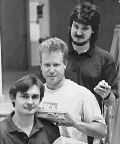
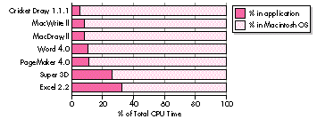
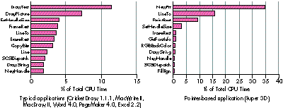
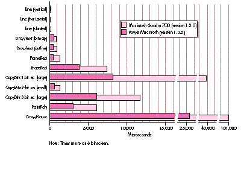
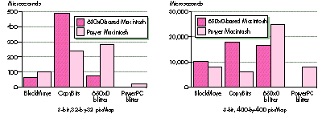
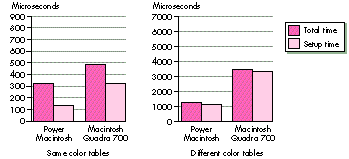
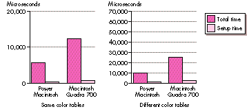

The new QuickDraw on the PowerPC platform substantially improves graphics
performance. A study comparing the performance of QuickDraw and custom blitters on
the Power Macintosh and 680x0-based machines provides information you can use to
ensure that the user benefits from those improvements. Further analysis, detailing
where CopyBits spends its time, leads to an implementation strategy for applications
that demand the fastest possible graphics.
Understanding the motivation for and consequences of the changes to QuickDraw on the
Power Macintosh can help you write faster applications. This article presents studies
that show QuickDraw as one of the most speed-critical parts of the Macintosh
Operating System together with studies that break down how applications spend CPU
time. Knowing how much time applications actually spend in various system routines
will help you develop a strategy for writing applications that perform well on both the
Power Macintosh and 680x0-based machines.
In porting QuickDraw to the PowerPCTM platform, Apple took advantage of the
opportunity to make some changes. We'll detail these changes and their consequences
for writing code. With that foundation, we'll move on to an in-depth discussion
comparing the QuickDraw CopyBits routine with custom blitters. The goal is to write
applications using routines that result in the fastest possible graphics performance on
both platforms -- PowerPC and 680x0 -- as well as on machines equipped with
graphics accelerators such as the new Apple Macintosh Display Card 24 AC. Sample
code on this issue's CD demonstrates a method of timing blitter routines so that your
application can use the fastest routine at run time.
Most of the Macintosh Operating System is written in 680x0 assembly language. In
order to reach time-to-market goals for the Power Macintosh, Apple had to focus
porting efforts on the most speed- critical parts of the system, so a study was
conducted to profile system usage of several common applications. System usage
depended largely on the operations performed in particular applications, but many
applications showed similar patterns.
Figure 1 is based on a subset of the study. It turns out that most applications spend
from 50% to 95% of their time in system code, with many spending more than 80%.
Figure 2 shows the percentage of total CPU time spent in the most frequently called
system routines for typical applications and for a pointer-based application (one that
avoids using handles).

Figure 1. CPU time breakdown: application versus system

Figure 2. System routine usage
The data made it clear that QuickDraw was one of the most critical components of
Apple's porting efforts. This article discusses QuickDraw version 1.3.5, which was
developed to run on the PowerPC platform. The new QuickDraw is based on QuickDraw
version 1.3.0, the most recent version of QuickDraw running on the Macintosh
Quadra, but with some changes (see the section "What's Different With Version
1.3.5?"). The new version, written in C, was compiled for the Power Macintosh as
QuickDraw version 1.3.5 and shipped with the new machines. The new QuickDraw C
code can also be compiled for 680x0-based machines and will be available in future
software releases.
The graphics speed comparisons made in this article compare the following:
Figure 3 compares times of various QuickDraw routines for version 1.3.0 running on
a Macintosh Quadra and version 1.3.5 running on a Power Macintosh -- there's no
question that the new QuickDraw routines run faster. However, published surveys
comparing the speed of 680x0-based machines to the Power Macintosh haven't always
shown the dramatic results indicated by Figure 3. This is partly because some
operations offer greater increased speed than others, so depending on which operations
an application uses heavily, overall speed varies. A second important factor is that the
applications surveyed are often emulated applications.

Figure 3. Comparing QuickDraw version 1.3.0 to version 1.3.5
Emulated applications are those written for 680x0-based machines that run through
the emulator on the Power Macintosh (see "Making the Leap to PowerPC,"develop Issue
16). These applications don't benefit fully from the PowerPC platform, because an
application that spends 80% of its time in system code on 680x0-based machines,
when emulated on a Power Macintosh, spends substantially more time in the
application. In general, completely emulated application code runs at about half the
speed of a Macintosh Quadra 700. Those same applications, when recompiled as
PowerPC code, usually run four or five times faster than on a Macintosh Quadra; code
that makes extensive use of floating point may be 20 times or more faster. However,
emulated graphics-intensive code, assuming it uses QuickDraw, is substantially faster
on a Power Macintosh than on a 680x0-based Macintosh because of the increased speed
of QuickDraw 1.3.5.
Clearly, to take full advantage of QuickDraw version 1.3.5, you need to write your
applications for the Power Macintosh in PowerPC code. Beyond that general strategy,
developing awesome applications for the PowerPC platform means figuring out how to
harness all that CPU power -- how to take advantage of the speed. For example, the
high speed of QuickDraw version 1.3.5 allows you to do high-quality animations.
Figure 3 shows that you can now do twice as many (or more) CopyBits operations per
second, which means that animations such as zooming, scrolling, and window dragging
(leave this one to Apple) can be done in real time without being chunky or annoying.
Text drawing is also much faster, so interactive word wrapping while positioning
objects in text is easy to do and looks better than it would on a 680x0-based
Macintosh. Overall, it's an open field for developers.
Tips for increasing the speed of PowerPC code are given in this issue's Balance of
Power column. *
Although this article focuses on QuickDraw, of course there are other, nongraphical,
ways of harnessing the power of the PowerPC processor. Floating point-intensive
applications benefit tremendously from the speed of the new processor.
The Graphing Calculator desk accessory that ships with the Power Macintosh
is an excellent example of harnessing CPU power for both the user interface and
computation-bound part of an application. As a floating point-intensive application,
Graphing Calculator benefits from the speed of the PowerPC processor. The user
interface has a number of nice touches, such as live scrolling, live zooming, and
interactive formula and graph manipulation. *
In the porting of QuickDraw to the PowerPC platform, many algorithms were
rethought and reimplemented. The result is slightly different (and we hope better!)
behavior. This section outlines some changes to keep in mind when you're writing code.
QDERROR
QuickDraw version 1.3.0 didn't do a very good job of setting and clearing QDError. In
version 1.3.5, every call sets QDError (which can cause problems for applications
that assume QDError will be preserved across most simple calls, like SetRect). In
some cases, version 1.3.0 jumps to SysError if there isn't enough memory; version
1.3.5 returns an error in QDError instead. This is usually an improvement, but it can
lead to strange behavior for applications that depend on SysError being invoked. For
example, some applications might put up a dialog asking the user to increase the
application partition size if QuickDraw invokes SysError. Since QuickDraw version
1.3.5 doesn't invoke SysError (returning a QDError instead), the application code
that puts up the dialog isn't triggered, so the user doesn't know to increase the memory
and the application might fail by not drawing anything. In choosing to always set
QDError, Apple chose the lesser of two evils.
MATCHING COLOR TABLES
QuickDraw version 1.3.0 uses the color table of the pixMap for the current GDevice,
not the color table of the destination pixMap, to map colors to the destination pixMap.
QuickDraw version 1.3.5 sets up a surrogate GDevice to make sure that the the
destination pixMap's and the GDevice's color tables always match. This may cause
problems for applications that relied on undefined behavior when the color tables
didn't match or for applications that were getting the right results by luck under
QuickDraw version 1.3.0. Again, Apple chose the lesser of two evils, and added the
surrogate device (known as the skank device). When QuickDraw is forced to set up the
skank device, the application pays a slight performance penalty. Also, if you do
operations such as index-to-color when your color tables don't match, and then later
use that color in a drawing, you won't necessarily draw with the index you expect. The
easiest cure: use GWorlds!
For more information on QDError, GDevices, pixMaps, and color tables, see
Inside Macintosh: Imaging With QuickDraw or Inside Macintosh Volume V. *
TRANSFER MODES
There's no way to pass the transfer space (the bit depth at which transfer occurs)
when doing transfer modes in QuickDraw. (QuickDraw GX remedies thisshortcoming.)
So if you're using an arithmetic mode from 8-bit to 16-bit, there are noguarantees
whether the transfer will occur at 5 bits per component (16-bit), 8 bits per
component (32-bit), or 16 bits per component (as in the 8-bit color table). It turns
out that most arithmetic modes in QuickDraw version 1.3.0 perform the transfer
operation at a resolution of 16 bits per color, while version 1.3.5 does most
operations at a resolution of 8 bits per color. This sometimes causes slight cosmetic
differences.
DITHERING
The dithering algorithm in QuickDraw version 1.3.5 is slightly different. This makes
it a nightmare to programmatically determine whether version 1.3.5 is generating the
same results as version 1.3.0, but visually the results are nearly identical.
STRETCHING AND SHRINKING IMAGES
The way CopyBits stretches and shrinks images for nonintegral ratios has been
improved in QuickDraw version 1.3.5 (integral ratios still produce the same results).
The advantage of this new algorithm is that it's symmetrical: if you stretch an image
and then shrink it back to the original size, the same pixels that were replicated in the
stretch are combined in the shrink.
The disadvantage of the new algorithm is that some applications stretch or shrink
without knowing it (the classic off-by-one error, resulting in a destination rectangle
that's smaller or larger than the source rectangle by one pixel). Such applications
may now drop (or replicate) a different scan line. This can cause slight cosmetic
blemishes in some applications.
UNEXPECTED REGISTER CONTENTS
Because QuickDraw version 1.3.5 runs PowerPC code, all emulated 680x0 registers
are preserved across calls. Thus, applications that expect the contents of volatile
registers (A0, A1, D0, D1, D2) to contain specific values on exit from a QuickDraw
call will break. (Conversely, don't rely on 680x0 registers being preserved, either!)
There's one exception: for compatibility with some existing applications, CopyBits
always sets D0 to 0.
PATCHING
Patching any QuickDraw version 1.3.5 routine with 680x0 code degrades performance
because of mode-switch overhead time. A mode switch occurs when a 680x0 caller is
calling PowerPC code, or vice versa. 680x0 patches on ShieldCursor are particularly
expensive because ShieldCursor is called by nearly every QuickDraw drawing routine.
For more information on the Mixed Mode Manager and mode switching, see
"Making the Leap to PowerPC" in develop Issue 16.*
DISABLED ACCELERATOR CARDS
QuickDraw version 1.3.0 makes calls through many low-level (undocumented)
vectors. Version 1.3.5 doesn't use these trap vectors, which disables most accelerator
cards. Of course, the frame buffer on these cards continues to work.
A favorite developer sport is complaining about how slow CopyBits is and writing
custom blit loops to replace it. A favorite sport among QuickDraw engineers is working
all night trying to speed up some part of CopyBits. This competition is healthy so long
as speed-critical applications call the faster code.
"Blitter" informally refers to any routine that moves memory, usually visual
information to the screen or an off-screen buffer; the operation is called a "blit."
These terms derive from the PDP-10 block transfer instruction, BLT. *
Through the years, Apple engineers have yearned for a way to get a substantial lead in
the race with the speed-hungry special-case developer. The answer lies in the Power
Macintosh: raw 680x0 code runs substantially slower through the emulator, while
QuickDraw version 1.3.5 CopyBits takes advantage of the lightning-fast RISC
processor.
Figure 4 compares various ways of moving the memory used by an 8-bit, 32-by-32
pixMap and an 8- bit, 400-by-400 pixMap to the screen. BlockMove gives a baseline:
the typical amount of time needed to move that much raw memory. The 680x0 blitter
is a custom blitter written for 680x0-based machines and emulated on the Power
Macintosh. The PowerPC blitter is a custom blitter written for the Power Macintosh
(it can't be run on a 680x0 machine).

Figure 4. CopyBits versus custom blitters
As you can see, the custom PowerPC blitters beat QuickDraw's CopyBits for the small
image hands down for both 680x0-based machines and the Power Macintosh. (With the
small image the constant overhead of CopyBits has a big impact on the overall time.)
However, the 680x0 blitter is much slower than CopyBits on a Power Macintosh. This
is due to the overhead of emulation.
The interesting case is the custom PowerPC blitter versus CopyBits for the large
image on the Power Macintosh. Here CopyBits wins. This is due to optimizations that
CopyBits has for large images that the PowerPC blitter doesn't have. In this case,
CopyBits is also faster than BlockMove, because of optimizations in CopyBits for the
PowerPC processor's frame buffer (which has a 64-bit data path). BlockMove is
optimized for copying to main memory, so it's slower when copying to the frame
buffer. (This is why the PowerPC blitter is faster than BlockMove for the small
image.) If you compare BlockMove and CopyBits using an off-screen pixMap as the
destination, you discover that BlockMove is faster.
For maximum performance of emulated applications, the emulator treats
BlockMove as a special case. *
The design of a frame buffer can have a great impact on overall blit speed. These times
were measured on the on-board video for the Macintosh Quadra and a fast
processor-direct slot video card for the Power Macintosh. If you install a
NuBusTMframe buffer on both machines and do a similar comparison, you find that the
difference in times is less. That's because NuBus is the bottleneck for the copy
operation. The situation changes radically, however, if the NuBus card is accelerated.
Then only calls to CopyBits get the acceleration; custom blit loops are still
bottlenecked by NuBus transfer rates.
Most of the comparisons in this section compare raw memory-moving power.
While QuickDraw is efficient at stretching bits, it's very inefficient at large indexed
shrinks. The problem is that CopyBits looks at every pixel and preserves the highest
index value. (This was done so that when icons are shrunk, they don't inadvertently go
to solid white.) For a shrink by a factor of four, this means that CopyBits is looking at
16 times too much data.*
There are two aspects to any given QuickDraw operation: setup and actual drawing.
Much of the time saved when an application uses a custom blit loop instead of CopyBits
is a consequence of avoiding the overhead of QuickDraw's setup. While QuickDraw has
extremely efficient blit routines, its downfall is that it has no idea how it's going to be
called from one time to the next, so it has to do all the setup every time it's called. (See
"Drawing in GWorlds for Speed and Versatility" indevelop Issue 10 for a discussion of
QuickDraw's setup.)
An application knows exactly how many of what it's drawing to where, so it can do the
setup for many operations once at the beginning, use custom blitters to do the drawing,
and then restore everything to its previous condition at the end, thus eliminating much
of the setup time. This is where you get the biggest gains when writing your own
blitters. On large operations, the overhead is relatively small, so you don't gain much
with custom routines. Small operations are often dominated by setup time, so a custom
routine can improve performance significantly.
Figure 5 compares setup time to total time for two CopyBits operations. Both are a
copy of a 32-by- 32, 8-bit, off-screen pixMap to the screen (no stretching or
shrinking, long aligned). The difference is that in the first CopyBits call, the color
tables match and in the second call they don't match (the first case is faster because
there's no need to invoke a pixel translation loop). Figure 6 shows the same two tests
as Figure 5, but this time the pixMaps being copied are 400-by-400. If you look
carefully, you can see that the setup time remained almost the same, but the
proportion between setup time and total time has changed drastically.
In general, the setup time on the Power Macintosh is minimal, since the setup is
computation- intensive and doesn't depend on memory access. Remember that setup
time is constant -- it remains the same no matter how much data is being copied.
Therefore, the relative efficiency of CopyBits depends on the amount of data being
copied.

Figure 5. CopyBits setup time to total time for a small copy

Figure 6. CopyBits setup time to total time for a large copy
The systems compared in Figures 5 and 6 are a Power Macintosh 8100/80 running
QuickDraw version 1.3.5 and a Macintosh Quadra 700 running QuickDraw version
1.3.0. These comparisons show that QuickDraw blit times can vary greatly across
different machines and different versions of QuickDraw.
QuickDraw GX uses caches extensively to keep intermediate results. This allows
part of the overhead to be short-circuited when a similar operation is performed
multiple times. *
Accelerator vendors use a number of different strategies for boosting QuickDraw's
performance. The Macintosh 8*24GC card attempted to accelerate entire operations,
while most third-party accelerators just concentrate on the blits. These cards often
use custom chips to substantially increase the speed of writing to memory; you're still
forced to pay for the setup time, but the blit time decreases substantially.
The upshot of this is that you're only guaranteed the best results if you profile the
candidates and pick a winner at run time. This is the topic of the following section.
For applications in which speed is critical, you want to run as fast as possible on
every machine. The easiest way to do this is to time the system code and any custom
code and use the faster version, perhaps even on a call by call basis. By comparing the
speed of a custom implementation with the Toolbox implementation and picking the
faster one at application initialization time, applications can automatically take
advantage of hardware accelerators when they exist, or highly specialized custom blit
loops when required. Of course, you would use this strategy only when speed is
extremely important. While developing your application, you should always try to use
system calls when they're available before reinventing (a sometimes square) wheel.
Listing 1 shows two routines, TimeBlitProc and BestBlitter, that compare CopyBits
with a custom blitter and return the address of the faster routine. (The code is also on
this issue's CD.) Writing the custom blitter is left as an exercise for the reader.
BestBlitter takes a pointer to a BlitProc, a PixMapHandle, and a source and destination
rectangle and returns the address of the faster routine -- the custom BlitProc or
CopyBits. It assumes that the destination rectangle is for the current graphics port and
current GDevice. For the sake of simplicity, the mode is assumed to be srcCopy and
there's no mask region.
Listing 1. Timing routines
#include <Timer.h>
#include <FixMath.h>
#include <Traps.h>
#if powerc
extern QDGlobals qd;
#endif
// Decide how many microseconds represent a "meaningful" difference.
#define kMeaningfulDiff 0
#define ABS(x) ((x < 0)? (-x) : (x))
unsigned long TimeBlitProc(BlitProcPtr theBlitProc,
BitMapPtr srcBits, BitMapPtr dstBits, Rect *srcRect,
Rect *dstRect, short mode, RgnHandle mask)
{
UnsignedWide startMicroSec, endMicroSec;
Microseconds(&startMicroSec);
(*theBlitProc)(srcBits, dstBits, srcRect, dstRect, mode, mask);
Microseconds(&endMicroSec);
// WideSubtract isn't defined for 680x0-based machines; however,
// a version is included on the CD.
WideSubtract((wide *) &endMicroSec,
(wide *) &startMicroSec);
return endMicroSec.lo;
}
BlitProcPtr BestBlitter(BlitProcPtr customBlitProc,
PixMapHandle srcPixHandle, Rect *srcRect, Rect *dstRect)
{
unsigned long customBitsTime, copyBitsTime;
long leDifference;
PixMapHandle portPixMap;
BlitProcPtr copyBitsPtr;
Str255 numStr;
// To factor out the trap overhead, get the trap address for
// CopyBits. PowerPC can get the address of the shared library
// routine directly. By getting the address of the library
// routine like this, we don't need to worry about calling
// CopyBits through CallUniversalProc.
#if powerc
copyBitsPtr = (BlitProcPtr) &CopyBits;
#else
copyBitsPtr = (BlitProcPtr) GetToolTrapAddress(_CopyBits);
#endif
portPixMap = ((CGrafPtr) qd.thePort)->portPixMap;
// Normally, it's not necessary to lock a pixMap or its pixels
// before calling CopyBits. But in this case, we're calling
// TimeBlitProc, which could hit the Segment Loader and cause
// memory to move. So we lock the pixMap handles before
// dereferencing them here.
HLock((Handle) portPixMap);
LockPixels(portPixMap);
copyBitsTime = TimeBlitProc(copyBitsPtr,
(BitMapPtr) *srcPixHandle, (BitMapPtr) *portPixMap, srcRect,
dstRect, srcCopy, nil);
customBitsTime = TimeBlitProc(customBlitProc,
(BitMapPtr) *srcPixHandle, (BitMapPtr) *portPixMap, srcRect,
dstRect, srcCopy, nil);
UnlockPixels(portPixMap);
HUnlock((Handle) portPixMap);
leDifference = (long)(customBitsTime - copyBitsTime);
if (ABS(leDifference) > kMeaningfulDiff && leDifference < 0)
return customBlitProc;
else
return copyBitsPtr;
}
BestBlitter gets the address of CopyBits (factoring out trap dispatch overhead if
running on a 680x0- based Macintosh, as you might want to do in your speed-critical
loops) and calls TimeBlitProc to get the time taken by each of the calls. If the
difference is enough to be meaningful (more than a few microseconds) and favors the
new BlitProc, BestBlitter returns a pointer to the BlitProc; otherwise, it returns a
pointer to CopyBits.
The actual timing is done by TimeBlitProc, which assumes that the current graphics
port and GDevice are set up and ready for copying. TimeBlitProc takes a pointer to the
BlitProc to be timed and a list of arguments expected by CopyBits.
We've made the assumption that the caller has flushed or loaded the caches
appropriately for the test. In comparing the routines, it would be unfair to one
routine if it had to spend time loading the data into the cache and the other routine
didn't! FlushInstructionCache and FlushDataCache are no longer available for
applications written in PowerPC code, so it's up to the caller to decide whether to test
these BlitProcs cached or uncached. (See "Here's the Cache" for a discussion of caching
on the Power Macintosh.) In any case, TimeBlitProc assumes that the caches are
already in the proper state.
Since caching is such a hardware-specific operation and can have both very obvious
and subtle effects on the execution of your code, it's hard to predict how different cache
architectures will affect yourperformance. In general, if you try to optimize for
smaller caches, you'll achieve better overall performance across a range of platforms.
To be completely fair, TimeBlitProc should also disable interrupts. If file sharing
comes in to work on a background copy in the middle of the timing, that blit loop will
appear to be really slow compared to the uninterrupted time.
TimeBlitProc calls a new trap, Microseconds, that takes a pointer to an UnsignedWide
(two longs) and fills it with the number of microseconds that have elapsed since the
system was booted. It calls Microseconds before and after the call to the BlitProc that
was passed in, calls WideSubtract to get the delta, and returns the low-order 32 bits
of the subtraction. This assumes that the elapsed time will fit into an unsigned long, or
that the BlitProc will take less than 71 minutes to complete!
The traps FlushInstructionCache and FlushDataCache were originally created to give
direct control over the instruction and data caches on 68040-based Macintosh Quadra
models. These two traps are very closely tied to the 68040 processor, both
conceptually and in their implementation. The PowerPC 601 chip has a unified cache
-- a single 32K cache for both data and instructions. Rather than trying to contort the
definition of the two existing traps to make sense on the PowerPC processor, Apple
engineers asked why you need to flush caches in the first place. The new
cache-management strategies are intended to be better abstracted, less dependent on a
specific processor, and definitely forward compatible.
Following are the four main reasons you might want to flush the caches and how
they've been (or need to be) addressed on the Power Macintosh.
Generate code dynamically.
Normally, to execute some data as instructions, you need to flush the caches. On the
Power Macintosh, you call the new system routine MakeDataExecutable, passing the
base address and the length of the data to be executed. (This routine doesn't exist --
even in an undocumented form -- on the 680x0-based machines, so to flush
instructions in the data cache, you need to call FlushInstructionCache and
FlushDataCache.)
Ensure that the data shared by other hardware is actually written.
For example, memory that's shared by a coprocessor has to be accessible when the
other processor needs to read it. To address this problem, the PowerPC-family
architecture includes a type of "bus snooping." Whenever someone wants to read an
address that's represented in the cache, the cache is flushed automatically before the
data is returned. This way, you don't need to anticipate all the different ways the cache
can get out of sync.
Ensure that data gets written to memory in the correct order.
For example, if you're writing to the screen, make sure the title bar gets written
before the contents. A caching mechanism could screw up this ordering, so to ensure
the proper ordering, the data cache must be flushed between writes. Screen memory is
marked as write-through , which sends the data to the cache and on through to the
screen memory. Writes for write-through memory are as slow as for uncached
memory. The benefit is that reads from write-through memory can still take
advantage of the cache. This feature is present on the 68040 Macintosh and remains
unchanged on the Power Macintosh.
Ensure that timing data you get when you compare two similar routines
hasn't been distorted by the caching mechanism.
Unfortunately, you're out of luck here. There's no officially sanctioned method for
doing this. But there are some techniques you can use to get around the caching.
If you anticipate that your procedure will usually have its data cached when it's called,
compare the routines for the cached condition. Simply call the routines twice and time
only the second call.
To compare the routines for the noncached case, you can "flush" the cache by reading
every byte in a 32K buffer. Not only is this ugly, but it's not even guaranteed to work
with future machines (such as the PowerPC 603, which goes back to using separate
data and instruction caches). And even on the 601 chip, this would flush only the
on-chip cache; it wouldn't necessarily flush the much larger, but slightly slower,
external cache.
The Power Macintosh provides a new range of computing power for the next generation
of the Macintosh line. The challenge for Apple is converting from a largely 680x0
assembly code base to PowerPC-code system services and substantially improving the
user experience in the process. The challenge for application developers is inventing
new uses for all the power provided by RISC, and designing creative user interface
elements that take advantage of the horsepower.
Use the studies presented here as a guide to writing graphics-intensive applications
that shine on both platforms. By using techniques such as runtime determination of the
most efficient routines, you can guarantee that your application will get the most out
of the system today and in the future.
KONSTANTIN OTHMER, SHANNON HOLLAND, AND BRIAN COX , who are always
ready to explore new avenues in software development for the QuickDraw team, have
finally hit the nail on the head. Their secret is high-tech equipment and proper
delegation of work. Alternating between periods of sleep and contemplation, they use
telepathic communication to transmit source code to each new team member, who can
then look forward to many days of compile cycles on a trusty Macintosh Plus
(providing our authors with even more time for sleep and contemplation). The team is
on the lookout for new labor-saving devices. Donations are welcome -- comfortable
couches to make room for future expansion would be particularly appreciated.*
Thanks to our technical reviewers Lew Cirne, Jean-Charles Mourey, Guillermo
Ortiz, and Andy Stadler; to Kate Cremer for generating the graphs; and to Tom Adams,
Becky Hammaker, Marianne Hsiung, Mac MacDougall, and David Searles for conducting
the application evaluations.*